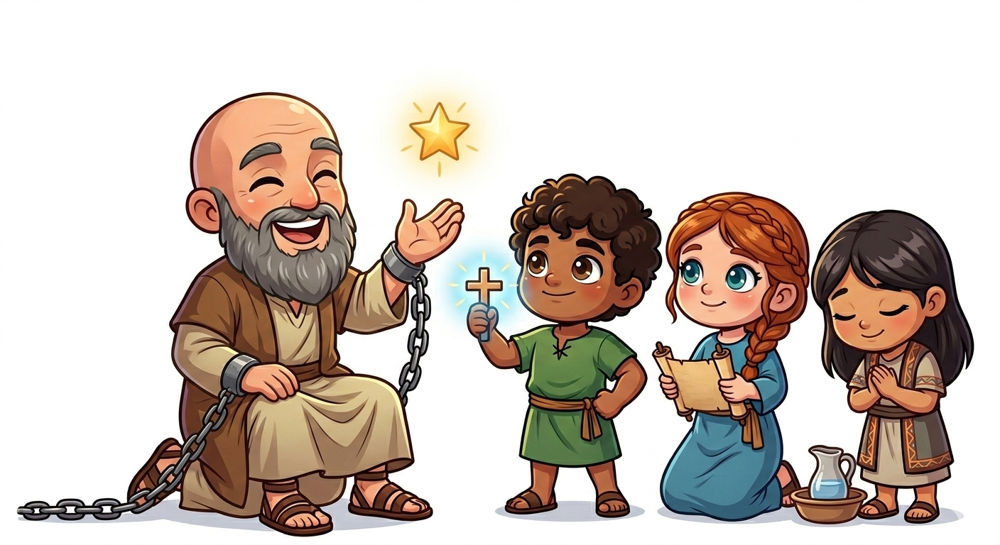
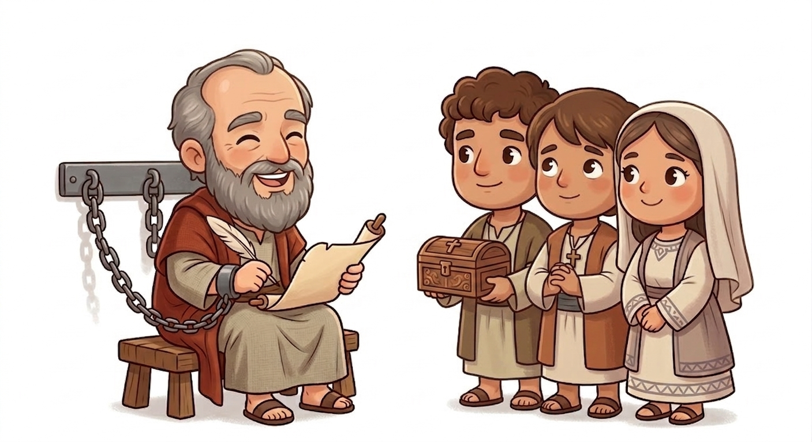
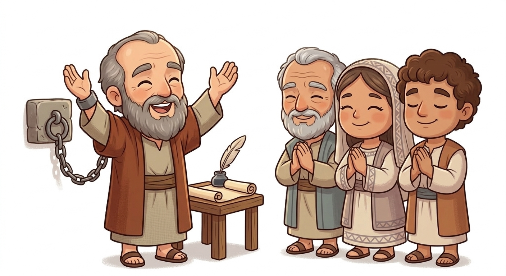
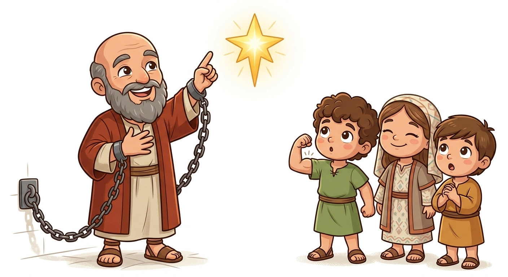
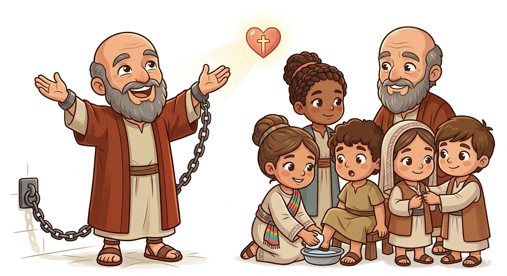
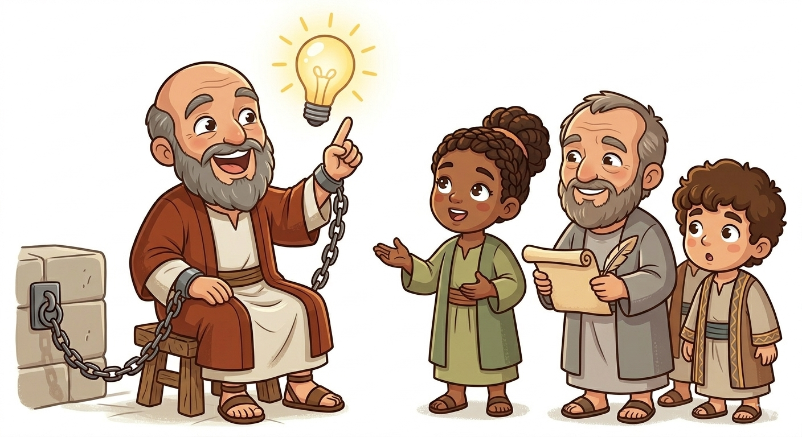

A Carta da Alegria — Um Resumo Visual para Crianças
Mesmo na prisão, Paulo cantava,
Pois sua alegria em Jesus não parava!
Não importa o lugar onde você está,
Com Jesus no coração, a alegria virá!
📖 "Alegrem-se sempre no Senhor!" - Filipenses 4:4
"Tudo posso naquele que me fortalece",
Paulo escreveu, e a fé aparece!
Quando você acha que não consegue mais,
Jesus te dá força, coragem e paz!
📖 "Tudo posso naquele que me fortalece." - Filipenses 4:13
Jesus sendo Deus, se fez servo aqui,
Nos ensinou a ser humilde assim!
Pense nos outros antes de você,
E o amor de Cristo vai crescer!
📖 "Nada façam por egoísmo, mas com humildade." - Filipenses 2:3
"Tudo posso naquele que me fortalece."
— Filipenses 4:13
Você já olhou para uma tarefa difícil e pensou: "Não consigo"? Paulo entendia esse sentimento — ele estava preso, longe de casa, enfrentando perigos. Mas ele descobriu o segredo: a força não vem de nós. Ela vem de Cristo que mora em nós. Com Ele, o impossível se torna possível!

Paulo estava preso em Roma, mas seu coração transbordava de alegria! Ele escreveu esta carta para seus amigos queridos em Filipos. Mesmo nas correntes, Paulo ensinava sobre a verdadeira alegria que vem de Jesus.
"Porque para mim o viver é Cristo, e o morrer é lucro."
— Filipenses 1:21
A igreja de Filipos foi a primeira igreja na Europa! Eram muito generosos e sempre ajudavam Paulo. Mesmo quando Paulo estava longe, enviavam presentes e orações. Amigos especiais!
"Dou graças a meu Deus em toda memória de vós, sempre em todas as minhas orações rogando com alegria por todos vós."
— Filipenses 1:3-4
Epafrodito foi enviado pelos filipenses para levar presentes a Paulo na prisão. No caminho, ficou tão doente que quase morreu! Mas se recuperou e Paulo o chama de "meu irmão e companheiro de lutas".
"Mas Deus teve misericórdia dele, e não somente dele, mas também de mim, para que eu não tivesse tristeza sobre tristeza."
— Filipenses 2:27
Paulo estava preso, mas em vez de reclamar, escreveu uma das cartas mais alegres da Bíblia! Sua prisão até ajudou o evangelho a se espalhar — os próprios soldados da guarda do imperador ouviram sobre Jesus!
"As minhas correntes se tornaram manifestas em Cristo em todo o pretório e em todos os demais lugares."
— Filipenses 1:13
Paulo ensinou que devemos orar com gratidão em vez de se preocupar. Quando fazemos isso, a paz de Deus — que vai além do entendimento — guarda nosso coração!
"Em nada sejais ansiosos; antes em tudo, pela oração e súplica com ações de graças, sejam os vossos pedidos conhecidos de Deus."
— Filipenses 4:6
Paulo usa o exemplo de Jesus — que sendo Deus, se tornou servo — para nos ensinar a pensar nos outros antes de nós mesmos. Essa é a maior grandeza!
"Nada façais por contenda ou por vanglória, mas por humildade; cada um considere os outros superiores a si mesmo."
— Filipenses 2:3


A verdadeira alegria não vem de brinquedos ou coisas materiais — vem de Jesus! Mesmo quando as coisas ficam difíceis, podemos ter paz e alegria porque Ele está conosco.
"Alegrai-vos sempre no Senhor; outra vez digo: alegrai-vos!"
— Filipenses 4:4
"Tudo posso naquele que me fortalece" é um dos versículos mais famosos da Bíblia! Quando achamos que não conseguimos, Jesus nos dá força, coragem e sabedoria para seguir!
"Tudo posso naquele que me fortalece."
— Filipenses 4:13
Paulo aprendeu a estar satisfeito em qualquer situação — com muito ou com pouco. Contentamento é uma arte que se aprende com Cristo ao nosso lado!
"Aprendi a estar contente em qualquer estado em que me encontre."
— Filipenses 4:11
Paulo queria que os cristãos de Filipos vivessem com alegria constante. Não importa o que aconteça ao redor — podemos escolher ser alegres porque Jesus vive em nossos corações!
"E a paz de Deus, que excede todo entendimento, guardará os vossos corações e os vossos sentimentos em Cristo Jesus."
— Filipenses 4:7
Paulo ensinou sobre humildade usando Jesus como exemplo. Jesus, sendo Deus, se tornou servo para nos salvar. Devemos pensar nos outros antes de nós mesmos!
"Haja em vós o mesmo sentimento que houve também em Cristo Jesus."
— Filipenses 2:5
Paulo nos diz para encher nossa mente com coisas verdadeiras, honestas, justas e puras. O que colocamos em nossa cabeça molda quem somos!
"...tudo o que é verdadeiro, tudo o que é honesto, tudo o que é justo... nisso pensai."
— Filipenses 4:8


Paulo menciona "alegria" ou "regozijo" mais de 16 vezes nesta carta! Isso é incrível porque ele estava preso quando escreveu — a alegria dele não dependia das circunstâncias!
A primeira pessoa convertida em Filipos foi Lídia, uma vendedora de tecidos de púrpura. Ela abriu sua casa para Paulo e sua equipe — a primeira "igreja" europeia foi numa casa de mulher!
Antes de fundar a igreja em Filipos, Paulo e Silas foram presos lá. Em vez de chorar, cantaram hinos à meia-noite e houve um terremoto que abriu as portas da prisão! (At 16:25-26)
Paulo estava preso, mas era alegre. O que tirou a sua alegria alguma vez? Como você pode, como Paulo, escolher ser alegre mesmo nas situações difíceis?
Filipenses 4:13 diz "tudo posso em Cristo". Você tem algo difícil pela frente — uma prova, um medo, um desafio? Como você pode depender da força de Cristo nessa situação?
Filipenses 2:3 fala sobre pensar nos outros antes de si. Há alguém na sua vida que precisa que você coloque os interesses dela antes dos seus? Como você pode fazer isso hoje?
Leia Filipenses 4:4-7 e faça uma lista de 5 coisas pelas quais você agradece a Deus. Cole no espelho do banheiro e leia toda manhã desta semana!
📖 LeituraEscreva Filipenses 4:13 em um papel e decore com desenhos de força e coragem. Guarde na mochila para que você possa ler quando sentir que "não consigo"!
✏️ MemorizaçãoPaulo cantou na prisão! Esta semana, quando uma situação difícil aparecer, ore e cante uma música de louvor em vez de reclamar. Veja o que acontece com seu coração!
🎶 Prática© 2025 - Trilho Kids
Desenvolvido com ❤️ para crianças